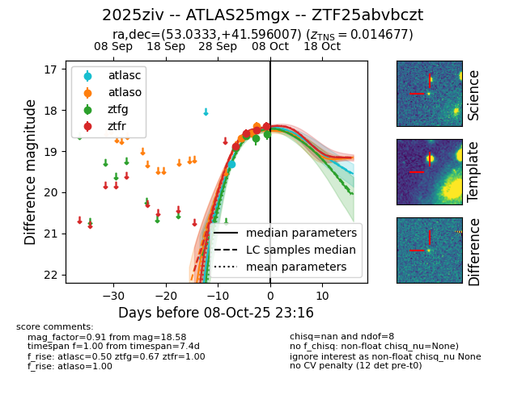
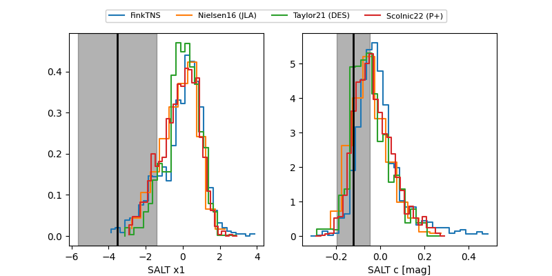

FINK: ZTF25abvbczt
Lasair: ZTF25abvbczt
ALeRCE: ZTF25abvbczt
TNS: 2025ziv
YSE: 2025ziv
ZTF25abvbczt (ztf,fink)
2025ziv (tns,yse)
ATLAS25mgx (atlas)
equatorial (ra, dec) = (53.0333,+41.59601)
galactic (l, b) = (152.4698,-11.87881)


last atlasc=19.32, atlaso=18.38, ztfg=18.58, ztfr=18.40
1 atlasc, 3 atlaso, 4 ztfg, 4 ztfr detections